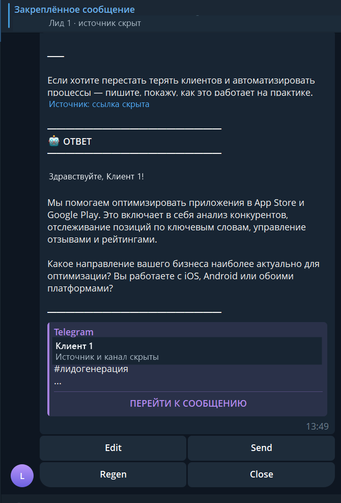

01 — TELEGRAM AI LEAD HUNTER
Не пропустить
нужный запрос.
Система находит релевантное сообщение, сохраняет ссылку на источник и готовит черновик. Решение о контакте остаётся за менеджером.
НЕ ДАШБОРД. РАБОЧИЙ СЦЕНАРИЙ.
Из потока сообщений — в отдельный топик с контекстом и вариантом ответа.
От сообщения
до решения.
- 01 / НАЙТИКоллектор принимает сообщение
Парсер отделяет автора и исходный контекст.
- 02 / ОТСЕЯТЬФильтрация и защита от дублей
Проверяются источник, повтор и возможность связаться с автором.
- 03 / ПОДГОТОВИТЬТопик и черновик
Менеджер видит запрос и подготовленный текст рядом.
- 04 / РЕШИТЬEdit / Regen / Send / Close
Ответ не уходит автоматически из показанного операторского сценария.
Найденный запрос — в рабочем топике.
Поддержка и поиск лидов используют похожую операторскую оболочку. Здесь показан найденный лид: источник, контекст и черновик менеджеру. Переписка и имена обезличены.

Лид не теряет
свой источник.
На реальном обезличенном кадре видны исходный запрос, подготовленный ответ и ссылка на сообщение. Операторская Telegram-оболочка общая с AI Support, но активный топик здесь относится к найденному лиду.
Открыть весь экран ↗{kind=link}

Telegram collector, parser, webhook, ingest, topics, draft formatter и связанный MTProto transport.
Локальные сценарии парсинга, фильтрации, черновика и MTProto boundary. Интерфейс 1440 / 390 px.
Реальная отправка, production Telegram session и сквозной вызов MTProto в найденных исходниках не подтверждены.